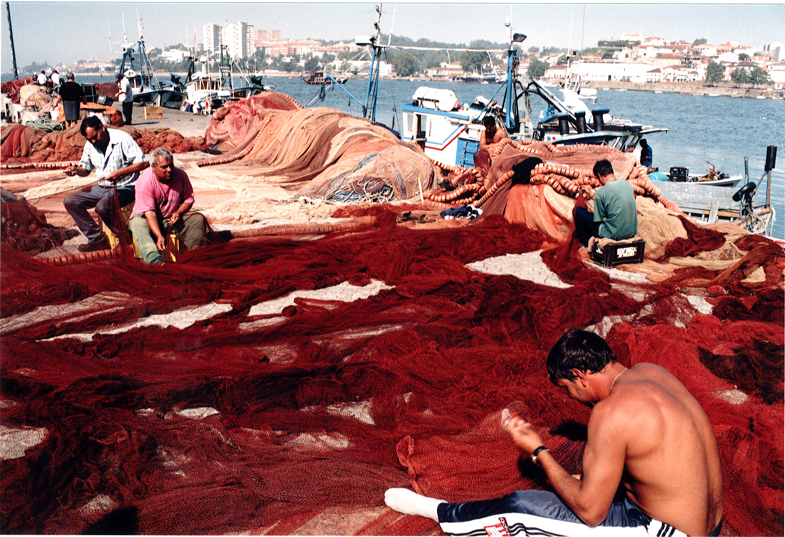
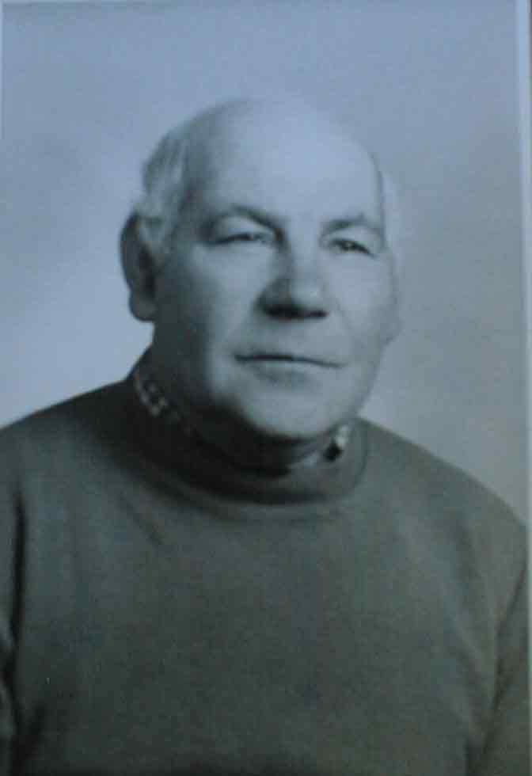

Museu da Pessoa
Maria Celeste de Oliveira Pereira
Maria Celeste de Oliveira Pereira
São José, Nossa Senhora de Fátima e Sagrado Coração de Jesus
Armando Pereira Dias, filho de Maria Celeste de Oliveira Pereira

João José Pereira Dias, de camisa cor-de-rosa, e Pedro Pereira Dias de costas. Filhos de Maria Celeste de Oliveira Pereira
Maria Celeste de Oliveira Pereira

José de Oliveira Dias, marido de Maria Celeste.

José de Oliveira Dias, quando tinha 69 anos
Neto de Maria Celeste de Oliveira Pereira na praia a brincar com o cão.